网络基础
前几天，收到上次的 RPG 游戏的推送， 整个第一季大概就只需要半天时间就能够走完整个游戏。这个游戏的内容包括一些比较流行的梗，很简短的一些游戏剧情，还有就是一些基础的网络方面的知识。
游戏的首页是这样的，是不是很有 galgame 的风格。
不过当咱进入游戏之后，它的风格就真的很 RPG。
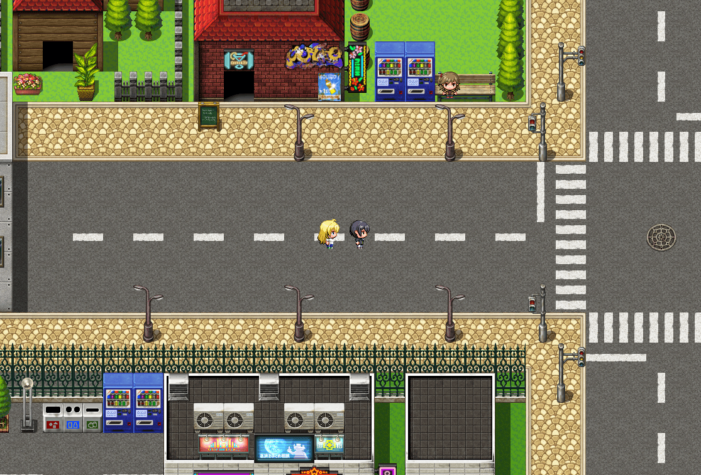
在之后的游戏剧情里面出现的学习面板，就跟正常的文档页面和视频页面差不多了，灰色表示还在开发之中。
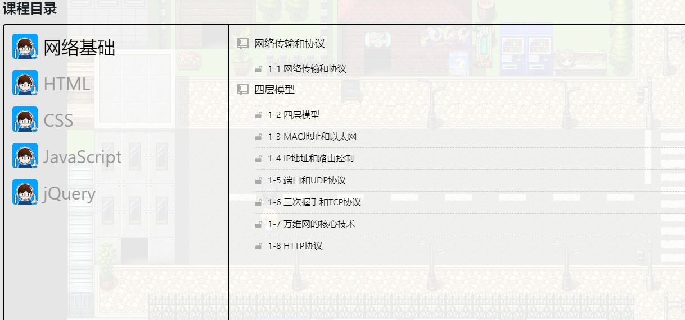
整体来说跟预期有些出入，但还是能接受的。
网络传输协议
如果我们把网络传输比作寄快递，那就不是寄一封信，更像是寄一栋房子。那我们会经历哪些问题呢？
- 需要目标地址 （寻址和路由）
- 需要一条到达目标地址的路 （数据链路）
- 房子需要拆装分箱 （分片）
- 箱子需要进行编号 （序列码）
- 箱子需要装到车上 （封装）
- 车队运输时可能堵车 （拥塞控制）
- 每一车的箱子是否完整 （错误检测和校正）
- 路上总会有丢失和损耗的部分，需要处理 （数据重发）
- 到底目的地，需要拆箱，将每一部分重新组装 （重组）
因此，我们需要一个严格的流程来保障安全，提高效率，这就是协议，目前最主流的网络协议是 TCP/IP 协议族。注意协议族的意思是一系列的协议，而不是仅仅一个协议。协议族将网络分成四层，每一层负责不同的逻辑。
四层模型
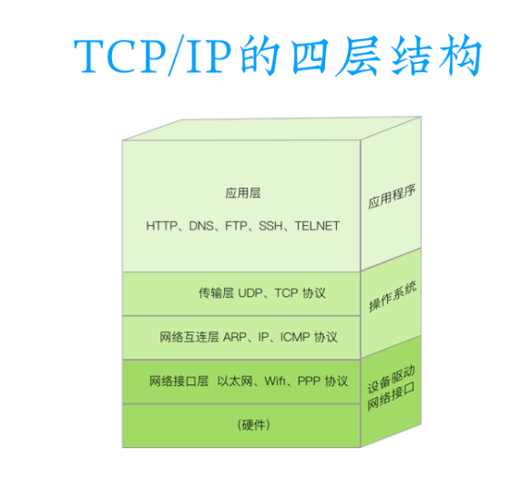
网络接口层：主要解决设备驱动和网络接口之类的问题，
网络互连层：IP 协议就是在这一层，用于定位和寻址，同时还有辅助 IP 协议完成工作的 ARP 协议；
传输层：处理网络传输的问题， UDP 和 TCP 协议就工作在这一层
应用层：各类应用程序使用的协议，如 HTTP、DNS、FTP等协议
各层间的分工
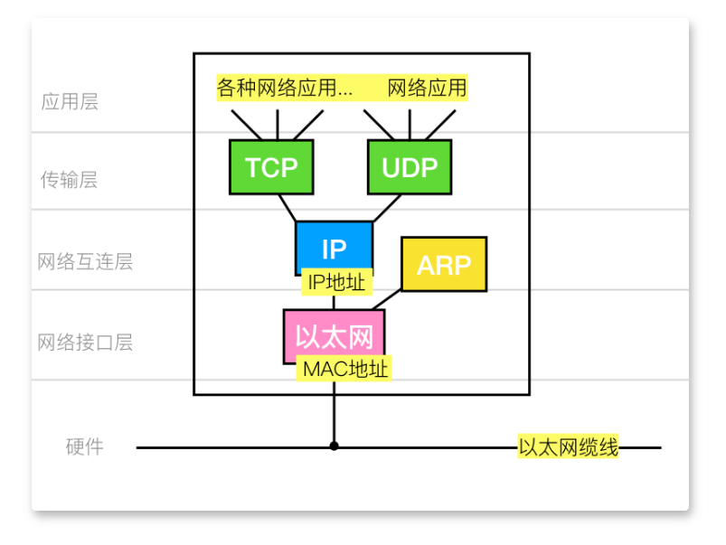
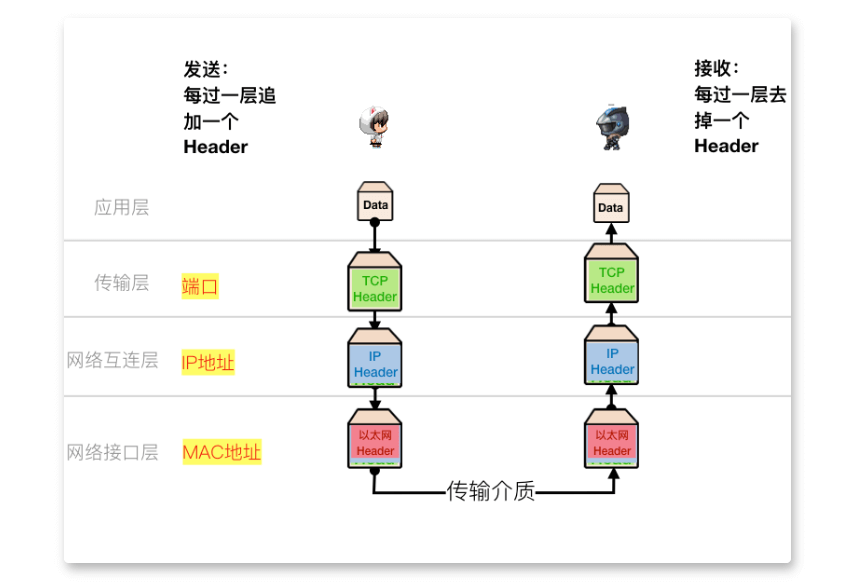
数据从发送方应用层发送出去，每往下一层，就给数据包裹上一层 Header， 当传输到接收方的 网络接口层时，每往上一层，就去掉对应的 Header ，最终接收方，就能够获取到数据。每一层最核心的 Header 如下图表示。
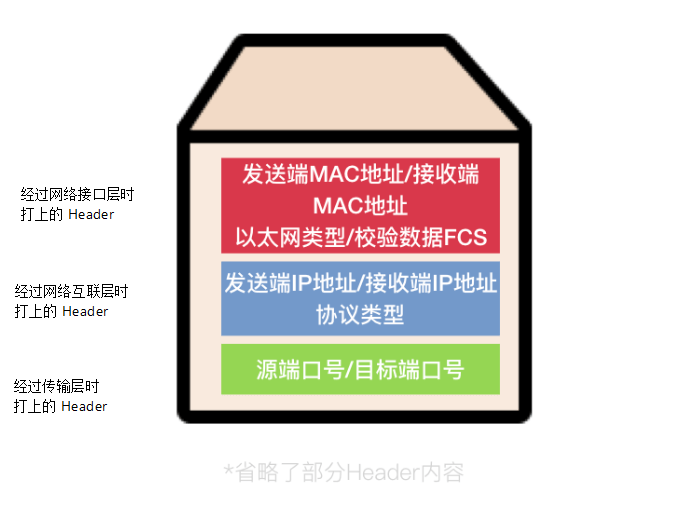
网络接口层
一个网卡的MAC地址： 00-05-5D-E8-0F-A3
电脑通过网卡进行网络连接，每一块网卡有一个卡商设定的MAC地址（也称物理地址），这个地址是设备的唯一标识。理论上来说，它作为设备的唯一标识不应该也不可能重复，但还是可以通过某些方法进行修改，不过只要接入同一个网络的设备的MAC地址不重复，就不会出现问题。
上面提到当发送方的数据经过网络接口层时，会被添加上 对应的 Header。最核心的一部分是 目标 MAC地址，源MAC地址，类型，FCS(帧检验序列)
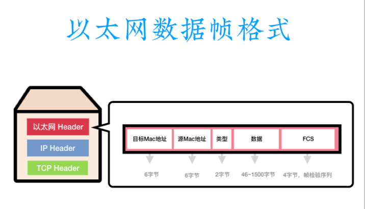
网络互联层
IP 由32位数字组成（当然是IPv4），分为网络标识和主机标识，通过子网掩码可以确定那部分是网络标识，哪部分是主机标识。 IP 地址分为共有地址和私有地址，共有地址需要向 Inter NIC进行申请，而私有地址属于非注册地址，可以专门为组织内部使用。
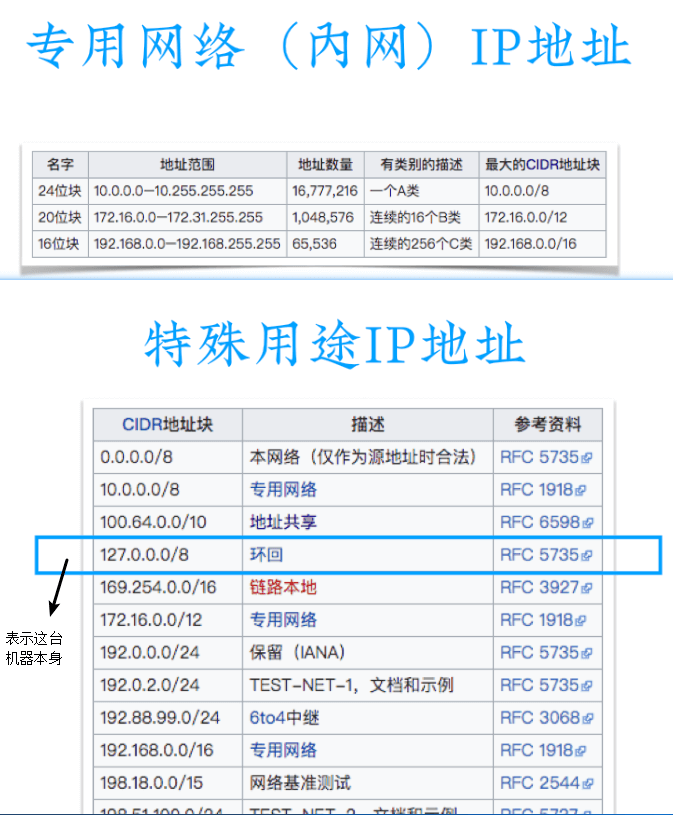
同一内网的数据传输
两台电脑在同一个网络中，通过交换机进行连接。当一台机器想要发送数据给另一台机器时，可以知道另一台机器的 IP 地址（比如浏览器输入），但是不知道另一台机器的 MAC 地址。所以需要向向交换机发送一个 ARP 广播进行查询，交换机接收到 ARP 请求，就会向所有的电脑转发这个广播，另一台机器会接收到这个广播，就会进行 ARP 响应。这样就可以知道另一台机器的 MAC 地址，能够把数据发送出去。
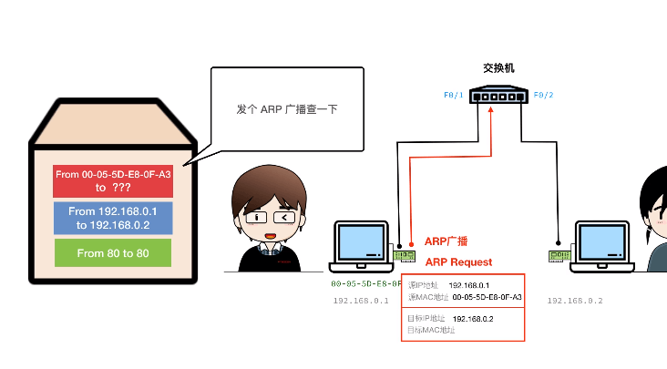
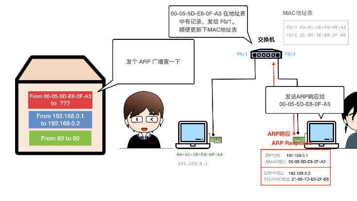
网络间的数据传输
不在同一网络间的电脑进行数据传输比较复杂，因为需要经过交换机，路由器等多种设备，但是本质上的传输过程还是不变。
因为两台电脑处于不同的网络中，因此当一台机器想要发送数据给另一台机器时，会发现另一台机器的 IP 不在同一个网段中，所以它会先发给网关，可是它又不知道网关的 MAC 地址，于是它要先发送 ARP 查询，获取到网关的 MAC， 这样数据就先发送到网关，网关会查询路由表，看看目标电脑的 IP 地址是在哪里，同样它会发送 ARP 查询，看看下一步应该将数据发送到哪里去，获得到 MAC 地址后，它会修改数据包里面的接收端的 MAC 地址， 最后通过这样接力的方式，就能够将数据包发送到另一台电脑上了。
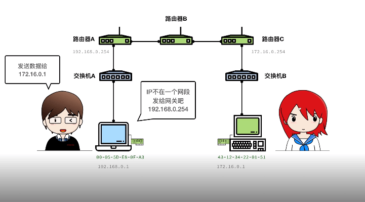
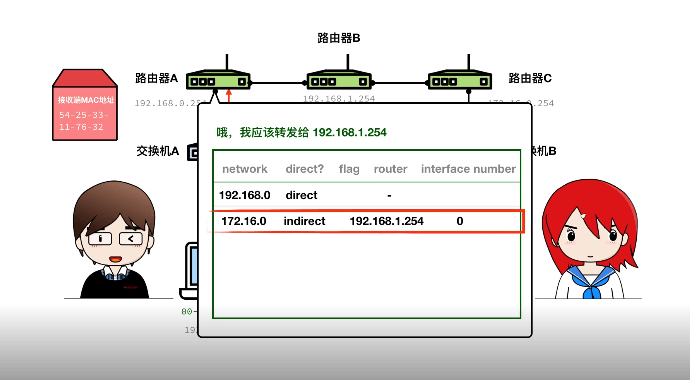
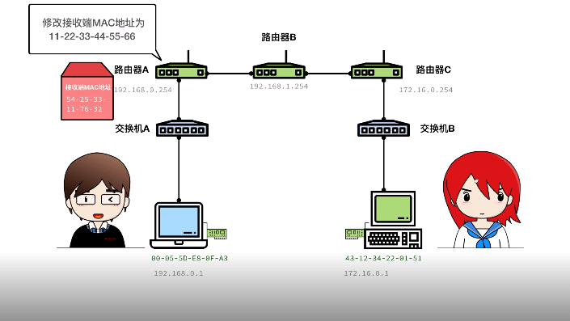
传输层
数据从网络传输到电脑上，那这些数据属于哪些程序呢？这就由端口决定了。一台电脑上的一个端口只能被一个程序占用，当被占用时，其他程序是无法使用的，当然如果占用端口的程序结束了，那么其他程序就可以使用这个端口了。
常用的端口：
- 21： FTP 文件传输服务
- 22： SSH 命令行远程登录
- 25： SMTP 邮件发送服务
- 80： HTTP 网站服务
- 110： POP3 邮件接收服务
- 139： SMB SAMBA共享
- 143： IMAP 邮件接收服务
- 443： HTTP 加密网站服务
- 3306： MySQL 数据库服务
- 3389： RDP 远程桌面服务
- 6379： Redis 缓存服务器
- 8080： Proxy 代理服务器
UDP 协议
UDP 协议相对来说比 TCP 协议更简单， UDP Header 只有四部分，分别是：源端口、目标端口、长度、校验和。 校验和是通过将数据累加得到的一个特征值，如果数据有损坏或丢失，那么校验和可能就对不上，说明这个数据包有问题。
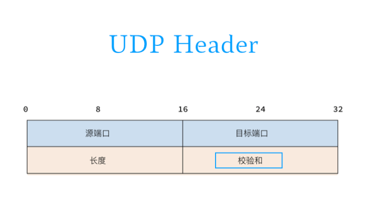
UDP 因为非常简单，所以它非常快，同时它也存在着丢包的问题。UDP协议是不会自动处理数据的问题，很多的处理细节都留给应用进行处理，比如 UDP 不会自动把包拼起来，也不做拥塞控制，如果网络拥堵，它也不会进行调节。因为这个协议传输数据的速度很快，所以 UDP 协议常常被使用在直播等场景，因为人们最希望看到的是最新的画面。
TCP 协议
TCP 协议可以看做 UDP 协议的增强版，它强化的数据传输时的可靠性，这样应用可以少操心数据传输的事情，可以将精力放到自己的业务逻辑上。
TCP Header 比 UDP Header 复杂很多。值得注意的是， TCP 的校验和是头部和数据部分的值的和，然后求反。TCP Header还多了序列码、响应码、标志位等信息。序列码和响应码可以对要发送的数据进行编号，标记它们的顺序，这样在网络延迟、并行发送的情况下才不会出错。
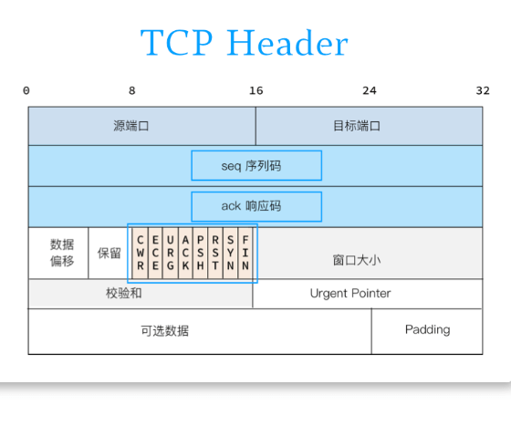
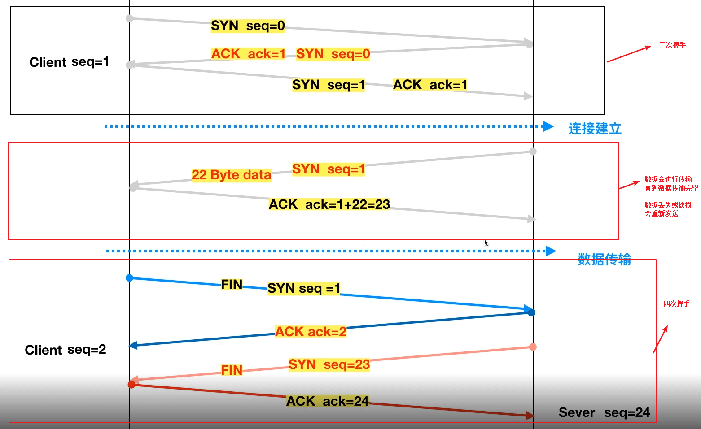
应用层
FTP 可以很方便的共享那些不会经常被修改的数据，如电影，音乐等。但如果某些资料经常被修改，那每次都要去下载一遍，岂不是很麻烦，于是伟大的万维网诞生了。
万维网的三个核心技术：
- URI： 统一资源标识符，用于描述哪台服务器上有哪些东西，用于定位。
- HTML： 超文本标记语言，用于标记文本，最核心的是能够在浏览一个页面时，通过点击操作跳转到其他页面。
- HTTP： 超文本传输协议，描述传输细节，比如跳转时参数是如何进行传递。
我们更多的知道 URL（统一资源定位符），而不是URI，那它们之间存在着怎样的关系呢？答案就是 URI 包含了 URL。
HTTP协议是非常重要的协议，几乎是整个 Web 编程的基础。HTTP 协议的最大特点是无状态，客户端向服务端发送一个请求，服务端收到请求后返回一个响应，整个过程非常简单。所有的请求，服务器都会当成新的请求，也就是说服务端不会维护客户端的信息，这就是无状态。（当然肯定会有办法让服务器记录状态）。
我们把 HTTP 协议传输的内容称为 HTTP message（报文），报文分为两种，一种是 Request（请求），告诉服务器想要什么；一种是 Response（响应），服务器返回的内容。这两种报文都需要遵从报文的基本格式。如果是请求，那么消息头里面就是 request header 相关字段，同样，如果是响应，那么消息头里面就是 response header的相关字段，还有一些 request 和 response 都能有的字段，我们称为 entity header。
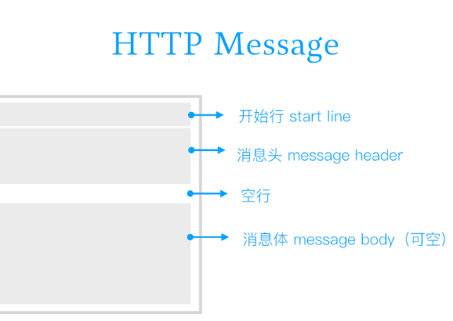
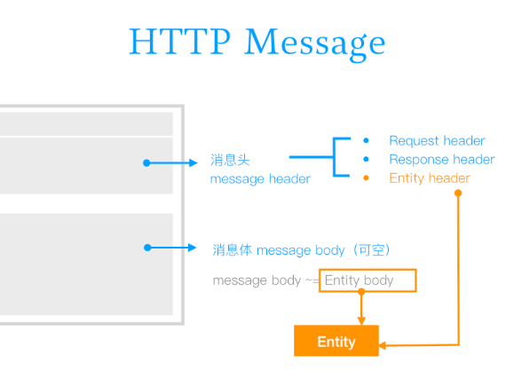
Request
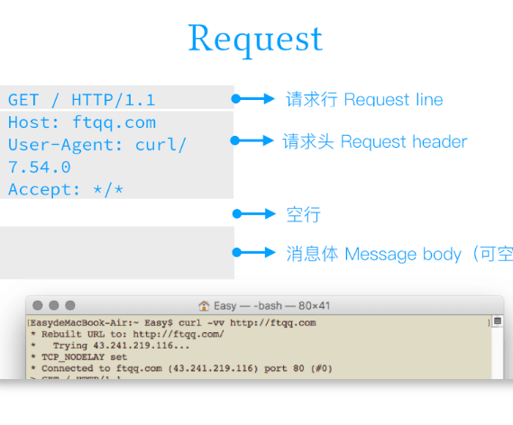
在 HTTP/1.1 协议中，所有的请求头，除了 Host 外，都是可选的。图中 GET 被称为 method（请求方法），请求方法有很多，但最常用的是：GET、POST 和 OPTIONS；其他的一些方法是：HEAD、PUT、DELETE、TRACE、CONNECT、PATCH。
常见的请求头字段：
- Referrer 请求发起页面的地址
- User-Agent 客户端信息
- Host 主机域名
- Max-forward 请求最大转发次数
Response
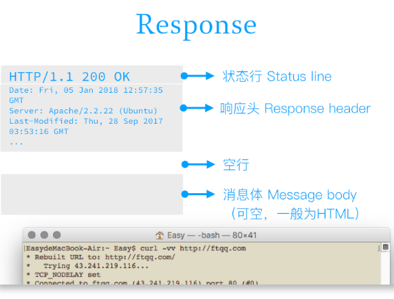
Response中存在状态码，比如图中的 200，它表示成功。状态码主要有五类： 1xx（响应信息提示）、2xx（成功）、3xx（重定向）、4xx（客户端错误）、5xx（服务端错误）。
常见的响应头字段：
- ETage Entity的唯一编码，修改后更新
- Retry-after N秒后重试
- Location 转向到
- Server Web Server 相关信息
其他
在 message header 中除了可以分别有请求头字段和响应头字段，还可以包含一些实体头字段。
常用的实体头字段：
- Allow 支持的 HTTP 支持的方法
- Expires 过期时间（秒）
- Content-Encoding 编码格式 如 gzip/defalte
- Content-Language 语言编码格式 如 zh-cn
- Content-Length 内容长度（字节）
- Content-Type 媒体类型，如 text/html; charset=UTF-8）
我们现在的字符集在绝大多数情况下都是使用的 UTF-8 格式。
常用的 MIME 类型 左边深蓝色是表示对应哪些文档，右边是 MIME 类型名（所有的 MIME 类型在这里）。
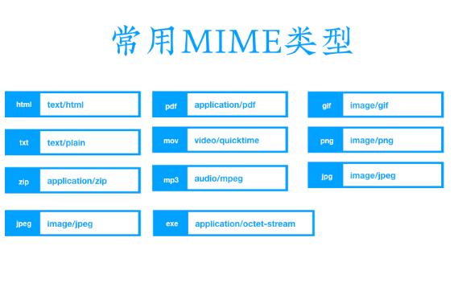
在 HTTP/1.1 中引入了 Keep-Alive（长连接），因为在 http/1.0 中每次进行请求，都会进行 TCP 连接，这样就会浪费大量的时间，因此在新版本里面出现了长连接来加快速度。
内容协商：服务器可以根据客户端的请求里面的一些特定字段，来发送特定的内容。
部分内容获取： 上次取了一部分，这次想取第二部分。
按条件获取：根据某些条件，服务费返回不同的数据。
Basic认证： 在客户端发送请求时带上 cookie，这样服务端就能知道它是谁了。
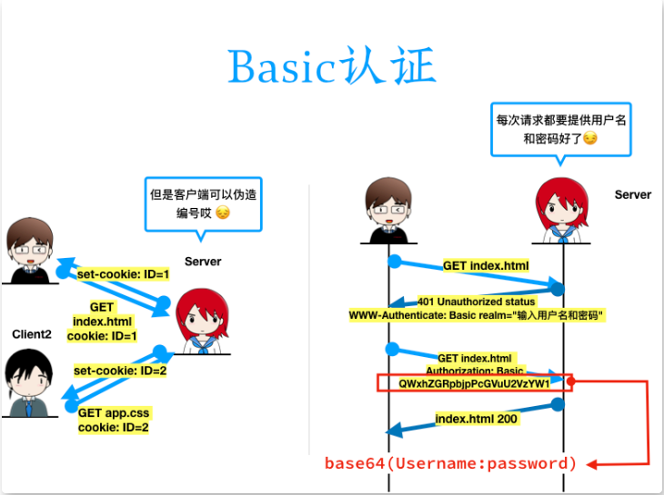
多内容分块传输：当发送的数据中既有表单，又有上传的文件，这个时候就需要使用 multipart，原理就是在一堆数据之间加上分隔符，然后把数据分成一段一段，每一段放置一些信息，最后由服务端根据这些信息完整的拼出数据。
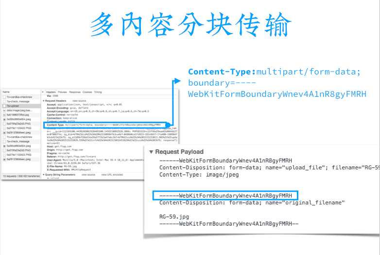
Google广告
假装这里有广告